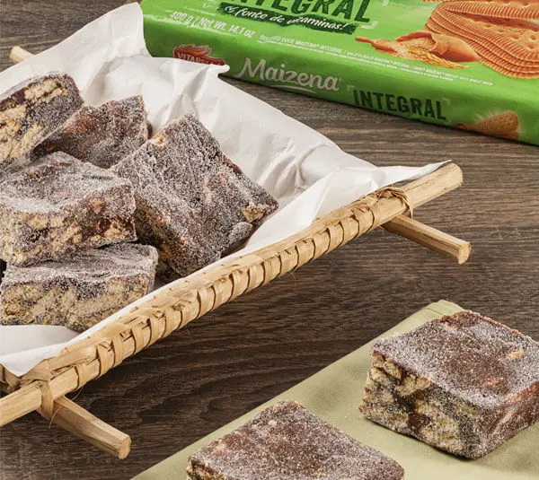
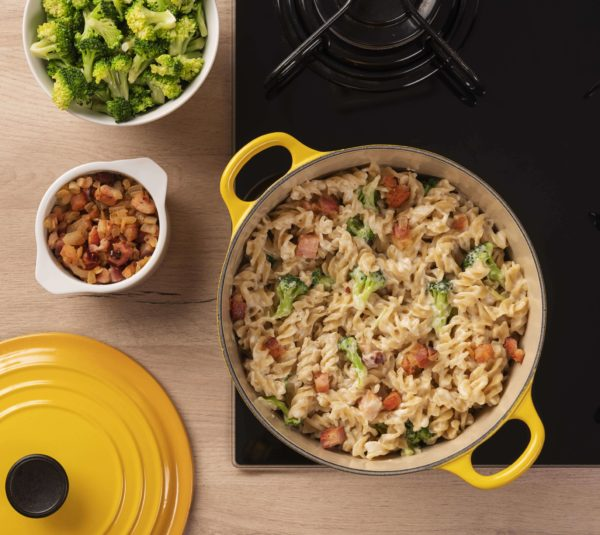

Lasanha

A palavra lasanha provém da grega "lasanon" que significa pote de quatro. O termo foi depois emprestado pelos romanos como "lasanum" para significar pote de cozinhar. Os italianos usaram a palavra para definir o prato onde, hoje se sabe, era feita a Lasanha. Apesar de tradicionalmente se acreditar que a lasanha é um prato tipicamente originado na Itália, tem-se evidências de que há um prato muito similar conhecido como "loseyns" (lê-se lasan), comido na corte do Rei Ricardo II no século XIV. Esta receita também figurou no primeiro livro de receitas da Inglaterra. A lasanha foi primeiro documentada no século XIII, quando foi usado num prato às camadas, esta versão mais antiga não incluia tomate, pois este ainda não tinha sido descoberto pelos Europeus.
Ingredientes:
- 500g de macarrão de lasanha
- 300g de calabresa processada
- 1 cebola picada
- 2 colheres de sopa de azeite
- 3 dentes de alho
- 500g de carne moída
- Sal a gosto
- Pimenta a gosto
- Coentro a gosto
- 3 xícaras de molho de tomate
- 600g de queijo muçarela fatiado
- 5 colheres de queijo parmesão ralado
Modo de preparo
- Cozinhar a massa da Lasanha conforme instruções da embalagem. Escorrer e reservar.
- Em uma panela colocar o azeite, a cebola e o alho deixando refogar bem.
- Adicionar a carne moída e em seguida a calabresa processada. Colocar 2 xícaras do molho de tomate. Temperar a gosto com coentro picado, sal e pimenta do reino. Deixar cozinhar e reservar.
- Montagem da lasanha:
- Colocar na travessa um pouco do molho de tomate.
- Dispor a massa da lasanha cozida
- Colocar o ragu de carne com calabresa
- Cobrir com queijo muçarela fatiado
- Colocar camada de massa de lasanha cozida
- Cobrir com ragu de carne com calabresa
- Cobrir com queijo muçarela fatiado
- Colocar camada de massa de lasanha cozida
- Colocar ragu de carne com calabresa
- Dispor a massa de lasanha cozida
- Cobrir com queijo muçarela fatiado
- Dispor uma xícara de molho de tomate
- Finalizar com queijo parmesão ralado
- Levar para o forno pré aquecido a 180 graus por 20 minutos ou até derreter e dourar o queijo levemente.
- Servir em seguida.
Palha Italiana
É um doce genuinamente brasileiro e sua provável origem está no sul do país. Assim como o brigadeiro, a palha é feita de leite condensado, manteiga e chocolate. A palha, diferentemente do brigadeiro, sofreu influência da culinária portuguesa e italiana por uma questão histórica, devido aos imigrantes italianos e portugueses que foram para o sul do Brasil quando vieram. A origem do nome “palha” é o doce salaminho de chocolate, doce português que além do biscoito Maria leva amêndoas sem pele, ou seja, sem palha. No processo de preparação do doce, quando a amêndoa é torrada e friccionada, solta a sua palha, marcando assim o nome do doce que influenciou. Acredita-se também que a parte “italiana” do nome é advinda da comunidade italiana que vive no sul.
Ingredientes:
- 2 latas de leite condensado
- 3 colheres de sopa de margarina
- 1 copo de achocolatado em pó
- 1 pacote de biscoito maizena
- 600g de chocolate picado
- Açúcar de confeiteiro para decorar
Modo de preparo
- Em fogo médio, misture o leite condensado, a margarina, achocolatado e os pedaços de chocolate na panela até formar um brigadeiro.
- Triture os biscoitos maizena e adicione na panela com o brigadeiro ainda quente.
- Forre uma fôrma retangular com filme plástico e despeje a massa.
- Cubra a forma com filme plástico e leve para gelar por uma hora.
- Desenforme e corte a massa em quadradinhos.
- Finalize com o açúcar
Macarrão Parafuso
Macarrão (em italiano plural: maccheroni, singular: maccherone) é um tipo de massa alimentícia com o formato de tubos curtos, em que se incluem os penne e os cotovelos. No entanto, em algumas regiões do Brasil, o termo "macarrão" é usado para se referir a qualquer tipo de massa alimentícia, desde o espaguete às letras e outras formas usadas em vários cozidos e sopas. Segundo uma antiga teoria, teria sido o explorador italiano Marco Polo a levar o macarrão da China para a Itália durante o século XIII. Hoje sabe-se que as massas alimentícias já eram conhecidas na Europa muito antes disso.
Ingredientes:
- 1 pacote de macarrão parafuso
- Brócolis
- 500g de bacon em cubos
- 1 colher e meia de margarina
- Meia xícara de farinha de trigo
- Meia cebola picada em cubos
- 1 xícara de leite
- Sal a gosto
- Pimenta a gosto
- Parmesão ralado a gosto
Modo de preparo
- Cozinhe o brócolis até o talo ficar macio, escorra e reserve.
- Cozinhe o macarrão, escorra e reserve.
- Em uma panela colocar a margarina para derreter junto com a cebola e 2 dentes de alho amassados e refogar. Depois colocar a farinha de trigo e mexer até soltar da panela.
- Vá colocando leite aos poucos e mexendo sempre para não empelotar, acrescente leite até dissolver toda a farinha. Por último colocar o parmesão, sal, pimenta e noz moscada a gosto, lembrando que o bacon é salgado.
- Em uma panela fritar o bacon (não precisa colocar óleo pois o bacon solta gordura).Quando estiver frito, adicionar o restante do alho amassado e deixar fritar só um pouco.
- Colocar o brócolis e deixar fritar por 1 minuto para apurar o sabor no brócolis.
- Colocar o macarrão e mexer.
- Por último adicionar o molho branco e mexer.
- Colocar em uma travessa de vidro e servir.